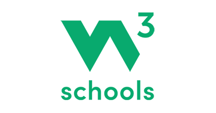

Click on ► to watch the video
Python - Assign Multiple Values to Variables - W3Schools.com
Loading...

Python - Assign Multiple Values to Variables - W3Schools.com
Subtitles
Deactivate
CONTINUE
CHANGE
×